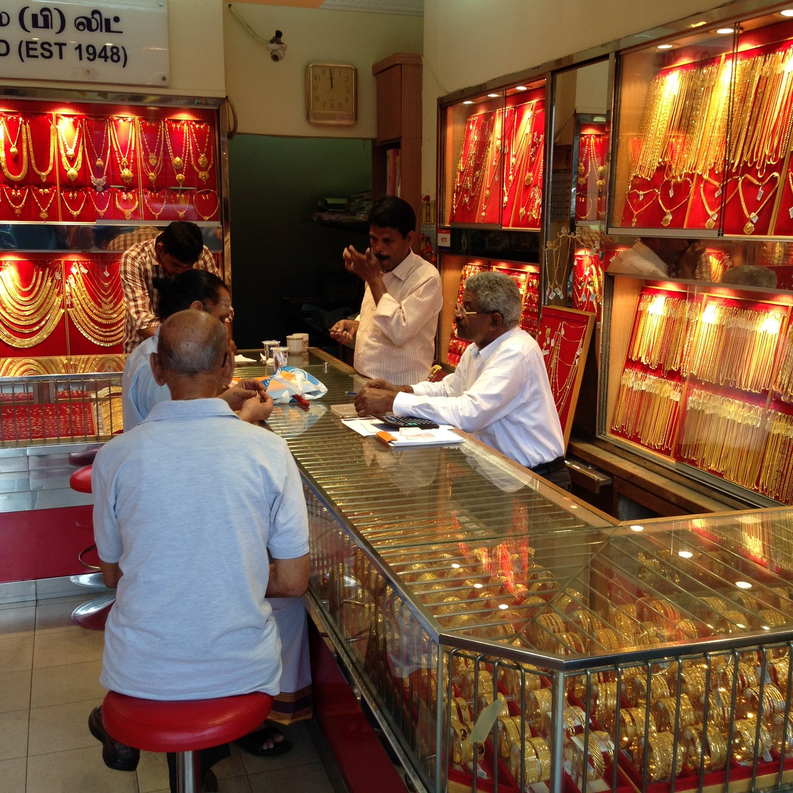

Singapur lässt einem keine Zeit zum Ankommen. Am Flughafen bekommt man gedanklich einen Laufzettel. Zwei Wochen. Ende Februar bis Anfang März 2015. Dass die Stadt gerade chinesisches Neujahr feierte, hatte ich nicht geplant. SG50 stand auf jedem zweiten Plakat, das Jubiläum war mit singapurischer Gründlichkeit durchorganisiert.
Mein Basislager: das Holiday Inn Express am Clarke Quay. Bequem. Auf dem Dach ein riesiger Pool, fünf Minuten vom Zimmer entfernt. Das reichte.
Marina Bay: ein Surfbrett auf drei Türmen
Das Marina Bay Sands sieht aus, als hätte jemand ein Surfbrett auf drei Wolkenkratzer gelegt. Obendrauf der SkyPark mit dem Infinity-Pool, 191 Meter über der Stadt. Ein Ende ragt einfach frei in die Luft. Ich habe minutenlang mit dem Kopf im Nacken davorgestanden.

Gleich nebenan: Gardens by the Bay. Künstliche Superbäume, die nachts leuchten. Echte Bäume dazwischen. Zwischen Palmwedeln hindurch geschaut, wirken die Hoteltürme wie ein Fund im Dschungel.

Zurück am Wasser wird es still.

Eines meiner Lieblingsmotive der ganzen Reise: drei Männer auf einem Holzdeck direkt am Wasser. Mittags zur Siesta hingelegt. Hinter ihnen die Skyline. Keiner schaut hin. Singapur gilt als Stadt der Effizienz. Diese drei beherrschten vor allem die Pause.
An der Marina Bay City Gallery hingen hunderte pinkfarbene Kreise mit Geburtstagswünschen aus aller Welt. SG50 zum Anfassen. In einer der Scheiben mein Spiegelbild mit Kamera. Zu sehen ist vor allem die Kamera.

Chinatown: Jahr der Ziege
Februar 2015. Chinesisches Neujahr, Jahr der Ziege. Chinatown hatte sich komplett umdekoriert. Über den Hauptstraßen schwebten hunderte leuchtende Glücksmünzen-Laternen.


An einem Marktstand stapelten sich Ananas-Törtchen bis unter die Zeltplane. Kandierte Früchte, Gebäck in roten Dosen. Fünf Dollar stand auf dem Pappschild. Der Blick der Verkäuferin machte klar: Das ist kein Verhandlungspreis. Ich habe gekauft. In einem Tempeleingang wachte ein Drache, grün geschuppt und rot umrandet. Gesichtsausdruck zwischen „Willkommen“ und „Benimm dich“.

Tank Road: siebzig Götter, dann aufgegeben
An der Tank Road steht der Sri Thendayuthapani Temple, seit 1859 der Tempel der Chettiars, südindischer Geldverleiher. Davor der Torturm, der Gopuram. 23 Meter hoch, bis oben voll mit bunten Götterfiguren, Etage über Etage. Ich stand davor und habe versucht zu zählen. Bei siebzig Figuren habe ich aufgegeben und fotografiert.

Little India
Weiter nördlich wechselt die Stadt die Tonart. Aus den Läden scheppern Bollywood-Hits.
Kerbau Road. Kerbau ist Malaiisch und heißt Büffel. Der Name stammt aus der Zeit, als hier Wasserbüffel gehalten wurden. Heute hängt in der Kerbau Road Gold an roten Wänden, Kette neben Kette, Armreif neben Armreif, bis unter die Decke. Auf dem Schild an der Wand steht EST 1948. Der Laden ist also älter als der Staat, dessen Geburtstag draußen auf jedem zweiten Plakat gefeiert wurde. Die Wanduhr zeigt kurz vor zwölf. Am Glastresen sitzt ein älterer Herr auf einem roten Hocker und dreht etwas Kleines, Goldenes zwischen den Fingern. Gegenüber der Juwelier mit Brille und Taschenrechner. Hinter ihm hält ein Verkäufer ein Schmuckstück so nah vors Gesicht, als wollte er daran riechen.

Irgendwo in Little India kam ich mit einer Familie ins Gespräch. Drei Generationen, vom Baby bis zur Großmutter im leuchtend roten Sari. Viel Lachen, wenig gemeinsames Vokabular. Am Ende durfte ich ein Foto machen.

Im Fort Canning Park, auf dem Rückweg, saß eine Gruppe junger Leute beim Picknick. Alle in Schwarz. Alle mit Peace-Zeichen in die Kamera.

Night Safari: Zoo, aber nachts
Der Abend, auf den ich mich am meisten gefreut hatte. Die Night Safari, der erste Nachtzoo der Welt, eröffnet 1994. Die Logik ist bestechend: Die meisten tropischen Säugetiere sind nachtaktiv. Also fährt man in offenen Bahnen durch die tropische Dunkelheit, dezent beleuchtet. Und plötzlich steht da ein Tiger. Wach. Interessiert. Näher als geplant.
Fotografisch war der Abend eine Kapitulation. Dunkel war es, Blitzen verboten. Die Tiere hatten null Verständnis für Belichtungszeiten. Also habe ich die Kamera irgendwann sinken lassen und einfach geschaut.
Auf den Plakaten der zwei Wochen klebte immer derselbe rote Punkt, SG50 stand darin. Bis bald, kleiner roter Punkt.
Quellen & Recherche
Diese Story basiert nicht nur auf eigenen Erinnerungen. Ein paar Fakten habe ich recherchiert und mit folgenden Quellen abgeglichen. Wer will, kann selbst nachlesen.
- Marina Bay Sands, Wikipedia
- Architektur des Marina Bay Sands, offizielle Seite
- SkyPark Infinity Pool, offizielle Marina Bay Sands Seite
- Garden Rhapsody, offizielle Seite Gardens by the Bay
- Ziegen- und Goldmünzen-Laternen in Chinatown 2015, AsiaOne
- Chinesisches Neujahr 2015, Jahr der Ziege, ABC News
- Sri Thendayuthapani Temple, National Heritage Board (Roots)
- Gopuram des Sri Thendayuthapani Temple, Wonderwall.sg
- Little India und Kandang Kerbau, National Heritage Board (Roots)
- Night Safari Singapore, Wikipedia
- Night Safari, National Library Board Singapore
- SG50-Jubiläumsjahr 2015, Monetary Authority of Singapore
- „Little Red Dot“ und das SG50-Logo, Mothership